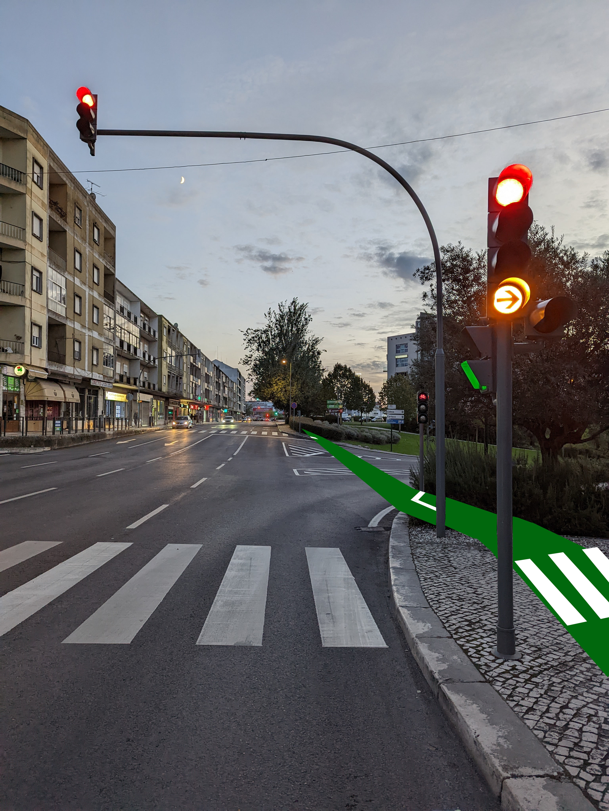
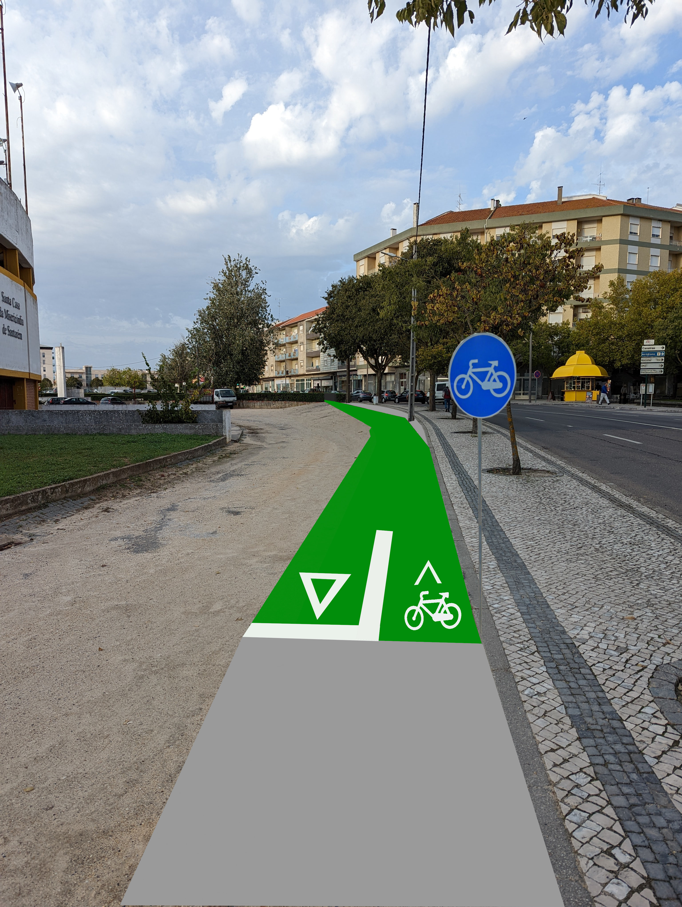
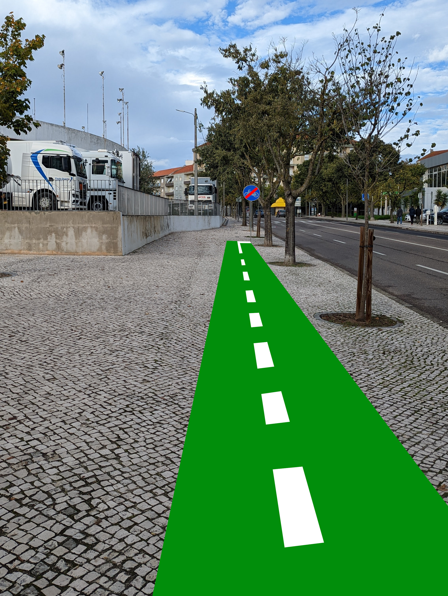
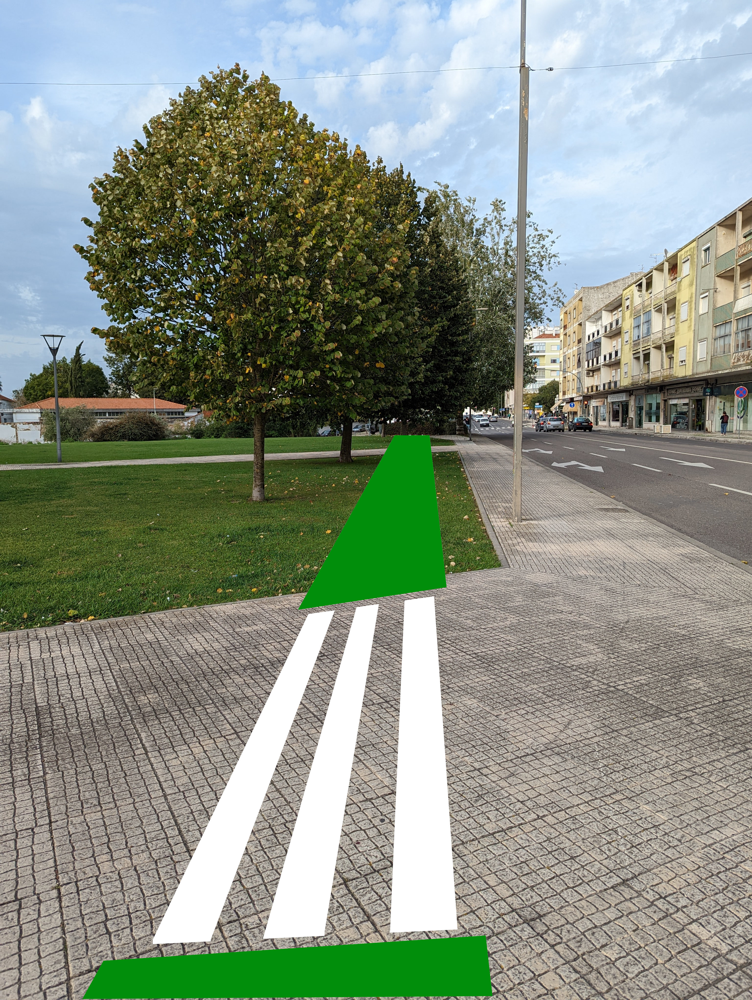
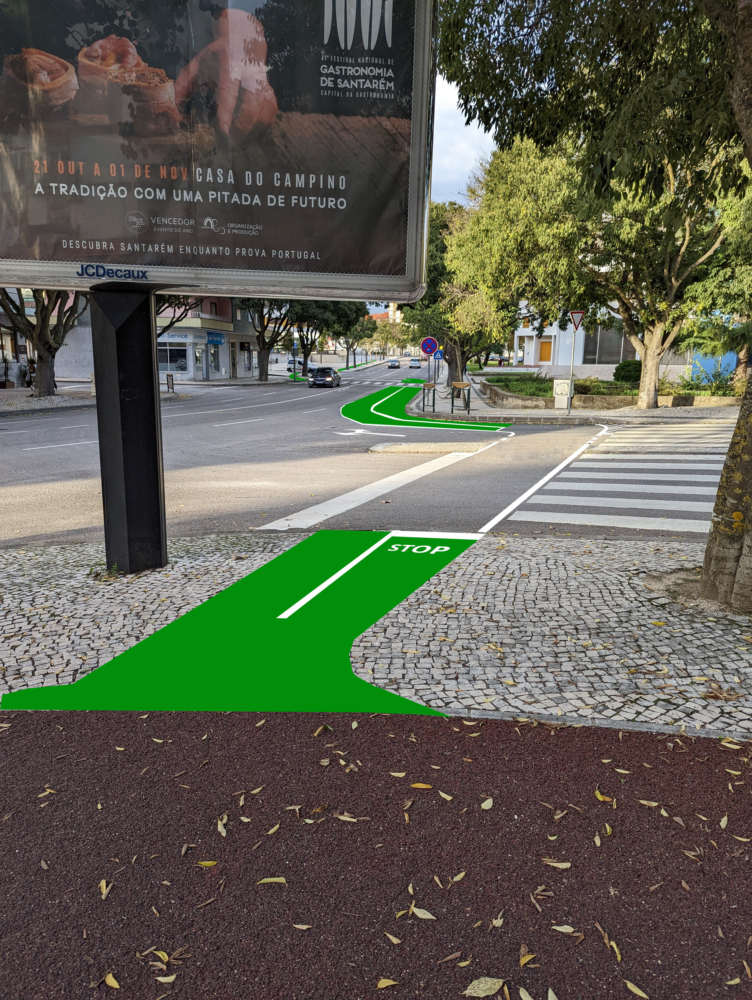

Santarém Ciclável
Petição para a construção de ciclovia na Avenida Dom Afonso Henriques
Assinar a petição
Saber mais ⬇
Porquê
Na cidade de Santarém foram construídas várias ciclovias, mas a sua utilização tem sido muito limitada. Uma grande razão é a rede ciclável em Santarém ser desconexa, obrigando os ciclistas a utilizar as estradas, trazendo uma elevada sensação de insegurança. A existência de ciclovias continuas entre os vários pontos da cidade, principalmente nas zonas mais planas, permitiria dar uma opção segura e eficiente para quem se quiser deslocar desta forma.
Acreditamos que a mobilidade suave deve ser algo em que o município de Santarém deva investir e a crise energética que atravessamos reforça a necessidade de implementar soluções para um futuro mais sustentável. A Avenida Dom Afonso Henriques é uma prioridade, já que permitiria unir a zona do Sacapeito ao Centro da cidade, e encontra-se numa zona geográfica maioritariamente plana.
Continuar ⬇
Como poderia ser?
Em 2017 foi divulgado um projeto pela Câmara Municipal de Santarém que pode ser visto neste vídeo (clique para ver), integrando uma ciclovia num projeto de requalificação da avenida Dom Afonso Henriques. Uma vez que, passados 5 anos, o projeto nunca passou do papel, apenas podemos assumir que não será executado.Queremos que seja construída a ciclovia da Avenida Dom Afonso Henriques, mesmo que de caráter provisório/pop-up nalguns troços, antes de uma eventual requalificação total da avenida.
A ciclovia deve ser desenhada por especialistas para garantir que seja segura e cumpre as normas necessárias. No entanto, temos algumas ideias de como possa ser feita, que aproveitam o facto de o campo da feira já estar pavimentado:
- 
-

- 
- 
- 
-

- 
Continuar ⬇
Quem beneficia?
Quem se quer deslocar de bicicleta ou trotinete
directions_bikeCondutores de automóveis
directions_carComércio e centro histórico
shopping_bagEconomia
monetization_onFamílias
diversity_3Continuar ⬇